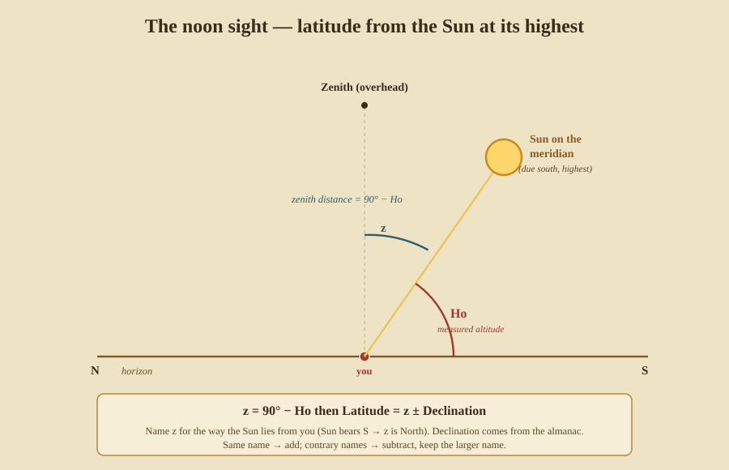

Finding Latitude
Latitude is the easy coordinate: it needs no clock, only a measured height and, for the Sun, a table of where the Sun stands that day. This part gives you three ways to get it — one by night, one by day (the workhorse), and one that needs nothing written down at all.
6. Latitude by Polaris — the pole star
In the northern hemisphere the simplest latitude of all: the altitude of Polaris is your latitude. Polaris sits almost exactly over the North Pole, so its height above your horizon equals how far north you are (the geometry is in Part I, and Part 0 walks it from zero). Measure Polaris with the sextant, apply the corrections, and you have latitude within a degree straight away.
Two refinements a careful navigator adds:
- Polaris is not exactly at the pole — it circles it by about ¾°. The almanac gives a small “Polaris correction” (historically read off the position of the Guards, the two bright stars of the Little Bear) to remove that wobble.
- It only works in the north, and only while Polaris is visible — see the visibility table in Part 0 (§0.3). South of the equator there is no bright pole star; you fall back on the noon Sun.
Who & when. The “Regiment of the North Star” — rules for correcting Polaris using the Guards — was codified by the Portuguese school of navigation under Prince Henry the Navigator in the 15th century and printed in the Regimento do Astrolábio e do Quadrante around 1509.
7. Latitude by the noon Sun — the workhorse
Polaris is a night sight and northern-only. The method that actually carried ships across every ocean is the meridian altitude of the Sun — the noon sight — because it works by day, in both hemispheres, and needs only one measurement at one predictable moment.
At Local Apparent Noon (LAN) the Sun crosses your meridian, due north or due south of you, at its highest point of the day. Watch it climb, catch its maximum altitude, and correct it to Ho. Then:

The rule, in two steps:
- Zenith distance:
z = 90° − Ho. Giveza name (N or S) for the way the Sun lies from you — if the Sun bore south at noon, the zenith is north of it, so namezNorth. - Combine with declination: the almanac gives the Sun’s declination (how
far north or south of the equator the Sun is that day), with a name. Then
Latitude = z ± Declination: same name → add; contrary names → subtract and keep the larger name.
Worked example. You are somewhere north of the tropics. At LAN the Sun bears due south; your corrected altitude is Ho = 47° 30′. The almanac gives the Sun’s declination as 20° 00′ N.
z = 90° − 47° 30′ = 42° 30′. The Sun bore south, so name z North → z = 42° 30′ N.- Declination is 20° 00′ N. Same name (N and N) → add:
42° 30′ + 20° 00′ = 62° 30′. - Latitude = 62° 30′ N.
That’s the whole method — one sight, one almanac look-up, two lines of arithmetic, and no clock. (You do want the ship’s time of noon roughly, so you know when to be watching, and — combined with a chronometer — LAN also gives a check on longitude; see Part III.)
Who & when. Practical noon-latitude sailing needed tables of the Sun’s daily declination. Regiomontanus (Johannes Müller) printed usable Ephemerides in 1474; Abraham Zacuto’s Almanach Perpetuum (1496) gave the solar declination tables the Portuguese and Spanish explorers actually carried — Vasco da Gama and Columbus among them. This is the technique of the great age of discovery.
8. Latitude by a meridian star, and by zenith stars
The noon-Sun method is not special to the Sun. Any body crossing your meridian gives latitude the same way — measure its meridian altitude, take the zenith distance, combine with its declination from the almanac. A bright star crossing the meridian at twilight is a fine latitude sight when the Sun won’t serve.
There is also an even older, table-free trick. A star whose declination equals your latitude passes directly through your zenith — straight overhead. So if you know that a particular star culminates at the zenith over, say, a home island, then seeing it pass overhead tells you that you have reached that latitude, no instrument required. Pacific navigators and Arab pilots both used such zenith stars as latitude markers for specific destinations.
Who & when. Zenith-star latitude is genuinely ancient and independent of the European tradition — Micronesian and Polynesian navigators, and the Arab pilots of the Indian Ocean (with the kamal), all used a star’s overhead passage, or its height above the horizon, to hold a latitude and “run down the westing” to a landfall. More on their whole system in Part VII.
The pattern to remember: latitude always comes from a height — the pole star’s, the noon Sun’s, a meridian star’s, or a zenith star’s — never from a clock. Longitude is the opposite, and harder; that is Part III.